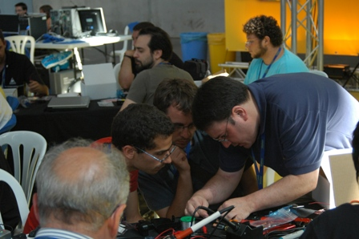
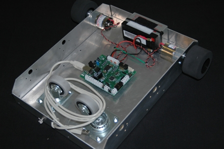
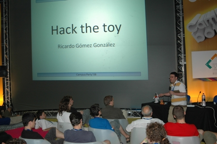
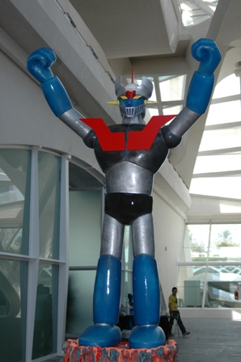
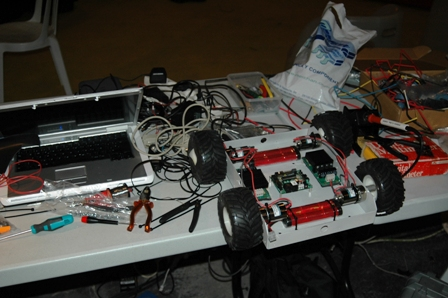

La semana pasada se celebró la Campus Party durante la cual se realizaron las siguientes actividades:


3. Conferencia “Frikadas con el Wiimote”
4. Conferencia “Hack the toy”

5. Mesa exposición de la “Granja de Robots” en la Ciudad de las Artes y de las Ciencias.

Además de frikear todas las noches construyendo un FlatBot avanzado.

Más información en el bitácora de Campus Party 2008.
Nos vemos en la próxima edición,
Andrés